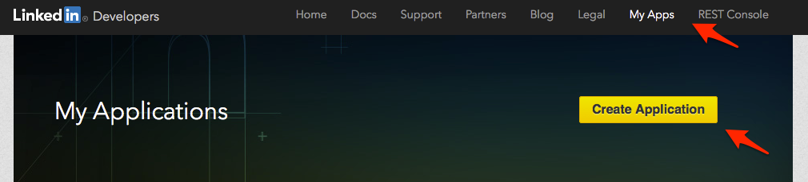
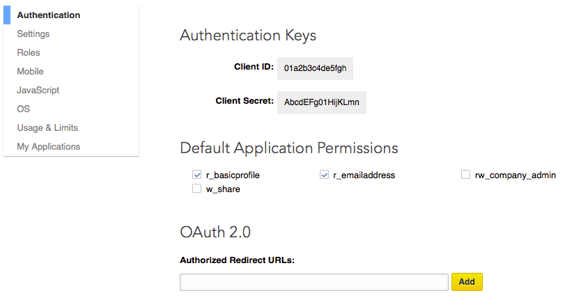
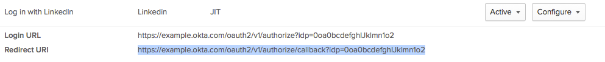

Identity Provider Set Up for LinkedIn
Note: You must have a LinkedIn account in order to set up a LinkedIn app through the LinkedIn Developers page.
- Log in to your LinkedIn account.
- Go to LinkedIn Developers.
- Click "My Apps" from the toolbar and click the "Create Application" button:

- Follow the instructions to create a new app by entering information about yourself and your company, then click "Submit".
- Regarding LinkedIn Application Permissions,
r_basicprofile and r_emailaddress are selected by default in the Okta configuration. Make sure that they are also selected under "Default Application Permissions" on the Authentication page. (see screenshot above)
- The next screen will look like the following:

- Use the Client ID and Client Secret to complete the LinkedIn application Identity Provider configuration in Okta.
- Once the LinkedIn Identity Provider configuration is saved in Okta, you need to copy the Redirect URI from the Okta "Identity Provider" page into your clipboard:

- In your LinkedIn application configuration, paste the Okta Redirect URI you copied in the step above into the Authorized Redirect URLs field in the "OAuth 2.0" section pictured above.
- Before clicking the blue "Update" button in the LinkedIn "Authentication" page, make sure
r_basicprofile and r_emailaddress are selected in the "Default Application Permissions" section of the on the Authentication page (see screenshot above). These application permissions are used by default in Okta and must be selected by in the LinkedIn application configuration as well.
- Click on the blue "Update" button on the LinkedIn page.
To understand more about LinkedIn OAuth setup and Application Permissions, visit LinkedIn's "Authentication with OAuth 2.0" page.